Contour Plots¶
-
class
sage.plot.contour_plot.ContourPlot(xy_data_array, xrange, yrange, options)¶ Bases:
sage.plot.primitive.GraphicPrimitivePrimitive class for the contour plot graphics type. See
contour_plot?for help actually doing contour plots.INPUT:
xy_data_array- list of lists giving evaluated values of the function on the gridxrange- tuple of 2 floats indicating range for horizontal directionyrange- tuple of 2 floats indicating range for vertical directionoptions- dict of valid plot options to pass to constructor
EXAMPLES:
Note this should normally be used indirectly via
contour_plot:sage: from sage.plot.contour_plot import ContourPlot sage: C = ContourPlot([[1,3],[2,4]], (1,2), (2,3), options={}) sage: C ContourPlot defined by a 2 x 2 data grid sage: C.xrange (1, 2)
-
get_minmax_data()¶ Returns a dictionary with the bounding box data.
EXAMPLES:
sage: x,y = var('x,y') sage: f(x,y) = x^2 + y^2 sage: d = contour_plot(f, (3,6), (3,6))[0].get_minmax_data() sage: d['xmin'] 3.0 sage: d['ymin'] 3.0
-
sage.plot.contour_plot.contour_plot(f, xrange, yrange, axes=False, linestyles=None, region=None, labels=False, plot_points=100, linewidths=None, colorbar=False, contours=None, aspect_ratio=1, legend_label=None, frame=True, fill=True, label_inline=None, label_fmt='%1.2f', label_fontsize=9, label_colors='blue', label_inline_spacing=3, colorbar_spacing=None, colorbar_orientation='vertical', colorbar_format=None, **options)¶ contour_plottakes a function of two variables, \(f(x,y)\) and plots contour lines of the function over the specifiedxrangeandyrangeas demonstrated below.contour_plot(f, (xmin,xmax), (ymin,ymax), ...)INPUT:
f– a function of two variables(xmin,xmax)– 2-tuple, the range ofxvalues OR 3-tuple(x,xmin,xmax)(ymin,ymax)– 2-tuple, the range ofyvalues OR 3-tuple(y,ymin,ymax)
The following inputs must all be passed in as named parameters:
plot_points– integer (default: 100); number of points to plot in each direction of the grid. For old computers, 25 is fine, but should not be used to verify specific intersection points.fill– bool (default:True), whether to color in the area between contour linescmap– a colormap (default:'gray'), the name of a predefined colormap, a list of colors or an instance of a matplotlib Colormap. Type:import matplotlib.cm; matplotlib.cm.datad.keys()for available colormap names.contours– integer or list of numbers (default:None): If a list of numbers is given, then this specifies the contour levels to use. If an integer is given, then this many contour lines are used, but the exact levels are determined automatically. IfNoneis passed (or the option is not given), then the number of contour lines is determined automatically, and is usually about 5.linewidths– integer or list of integer (default: None), if a single integer all levels will be of the width given, otherwise the levels will be plotted with the width in the order given. If the list is shorter than the number of contours, then the widths will be repeated cyclically.linestyles– string or list of strings (default: None), the style of the lines to be plotted, one of:"solid","dashed","dashdot","dotted", respectively"-","--","-.",":". If the list is shorter than the number of contours, then the styles will be repeated cyclically.labels– boolean (default: False) Show level labels or not.The following options are to adjust the style and placement of labels, they have no effect if no labels are shown.
label_fontsize– integer (default: 9), the font size of the labels.label_colors– string or sequence of colors (default: None) If a string, gives the name of a single color with which to draw all labels. If a sequence, gives the colors of the labels. A color is a string giving the name of one or a 3-tuple of floats.label_inline– boolean (default: False if fill is True, otherwise True), controls whether the underlying contour is removed or not.label_inline_spacing– integer (default: 3), When inline, this is the amount of contour that is removed from each side, in pixels.label_fmt– a format string (default: “%1.2f”), this is used to get the label text from the level. This can also be a dictionary with the contour levels as keys and corresponding text string labels as values. It can also be any callable which returns a string when called with a numeric contour level.
colorbar– boolean (default: False) Show a colorbar or not.The following options are to adjust the style and placement of colorbars. They have no effect if a colorbar is not shown.
colorbar_orientation– string (default: ‘vertical’), controls placement of the colorbar, can be either ‘vertical’ or ‘horizontal’colorbar_format– a format string, this is used to format the colorbar labels.colorbar_spacing– string (default: ‘proportional’). If ‘proportional’, make the contour divisions proportional to values. If ‘uniform’, space the colorbar divisions uniformly, without regard for numeric values.
legend_label– the label for this item in the legendregion- (default: None) If region is given, it must be a functionof two variables. Only segments of the surface where region(x,y) returns a number >0 will be included in the plot.
EXAMPLES:
Here we plot a simple function of two variables. Note that since the input function is an expression, we need to explicitly declare the variables in 3-tuples for the range:
sage: x,y = var('x,y') sage: contour_plot(cos(x^2 + y^2), (x,-4,4), (y,-4,4)) Graphics object consisting of 1 graphics primitive
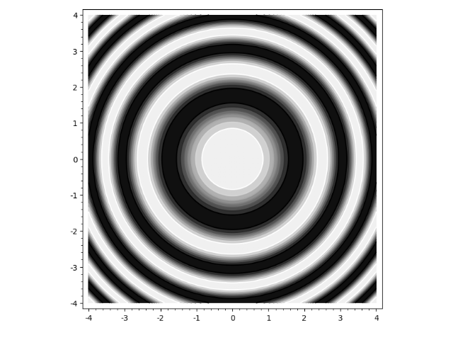Here we change the ranges and add some options:
sage: x,y = var('x,y') sage: contour_plot((x^2) * cos(x*y), (x,-10,5), (y,-5,5), fill=False, plot_points=150) Graphics object consisting of 1 graphics primitive
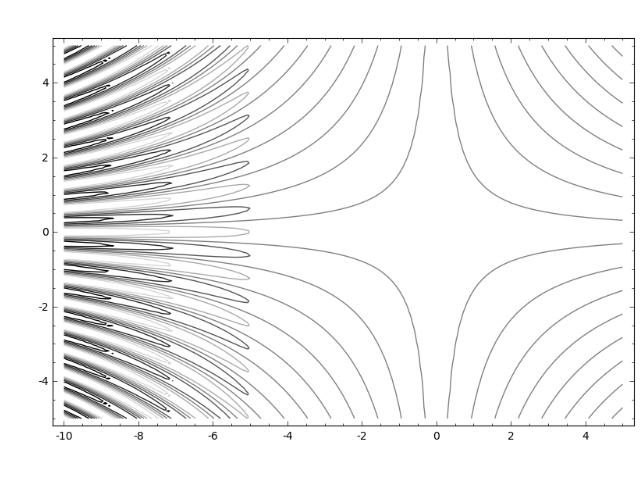An even more complicated plot:
sage: x,y = var('x,y') sage: contour_plot(sin(x^2+y^2) * cos(x) * sin(y), (x,-4,4), (y,-4,4), plot_points=150) Graphics object consisting of 1 graphics primitive
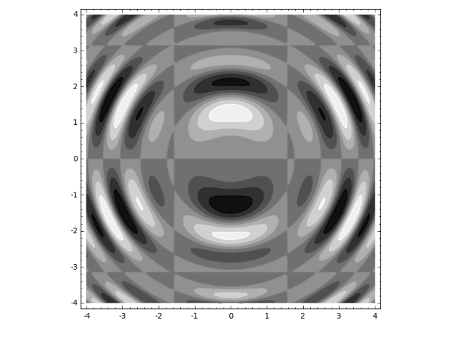Some elliptic curves, but with symbolic endpoints. In the first example, the plot is rotated 90 degrees because we switch the variables \(x\), \(y\):
sage: x,y = var('x,y') sage: contour_plot(y^2 + 1 - x^3 - x, (y,-pi,pi), (x,-pi,pi)) Graphics object consisting of 1 graphics primitive
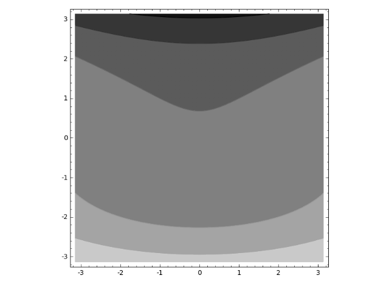sage: contour_plot(y^2 + 1 - x^3 - x, (x,-pi,pi), (y,-pi,pi)) Graphics object consisting of 1 graphics primitive

We can play with the contour levels:
sage: x,y = var('x,y') sage: f(x,y) = x^2 + y^2 sage: contour_plot(f, (-2,2), (-2,2)) Graphics object consisting of 1 graphics primitive
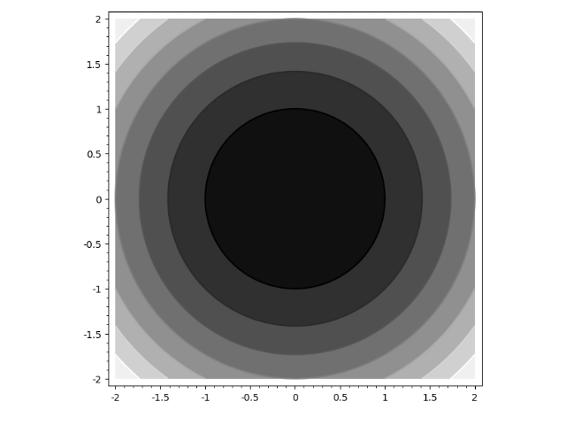sage: contour_plot(f, (-2,2), (-2,2), contours=2, cmap=[(1,0,0), (0,1,0), (0,0,1)]) Graphics object consisting of 1 graphics primitive
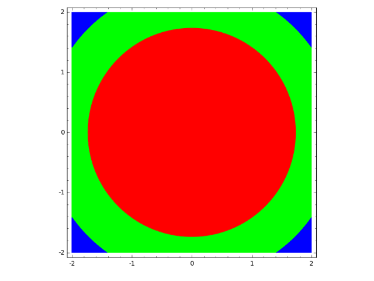sage: contour_plot(f, (-2,2), (-2,2), ....: contours=(0.1,1.0,1.2,1.4), cmap='hsv') Graphics object consisting of 1 graphics primitive
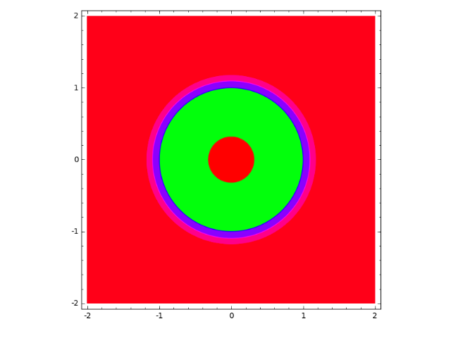sage: contour_plot(f, (-2,2), (-2,2), contours=(1.0,), fill=False) Graphics object consisting of 1 graphics primitive
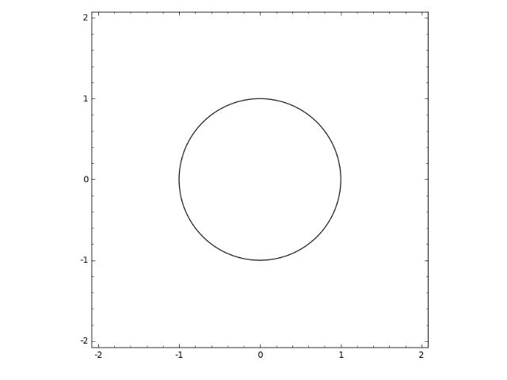sage: contour_plot(x - y^2, (x,-5,5), (y,-3,3), contours=[-4,0,1]) Graphics object consisting of 1 graphics primitive
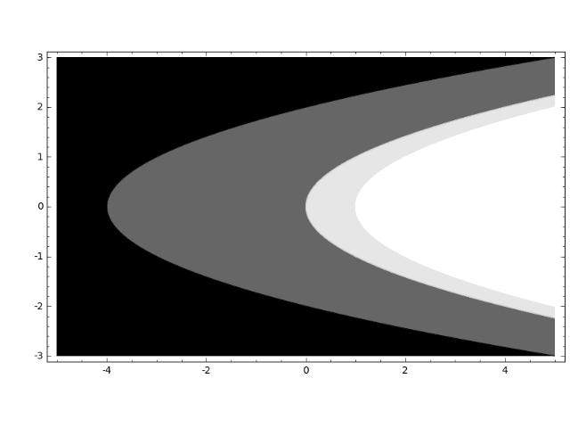We can change the style of the lines:
sage: contour_plot(f, (-2,2), (-2,2), fill=False, linewidths=10) Graphics object consisting of 1 graphics primitive

sage: contour_plot(f, (-2,2), (-2,2), fill=False, linestyles='dashdot') Graphics object consisting of 1 graphics primitive
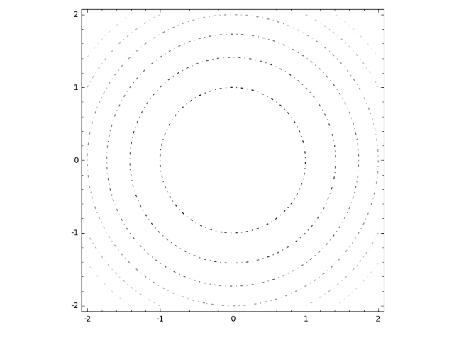sage: P = contour_plot(x^2 - y^2, (x,-3,3), (y,-3,3), ....: contours=[0,1,2,3,4], linewidths=[1,5], ....: linestyles=['solid','dashed'], fill=False) sage: P Graphics object consisting of 1 graphics primitive
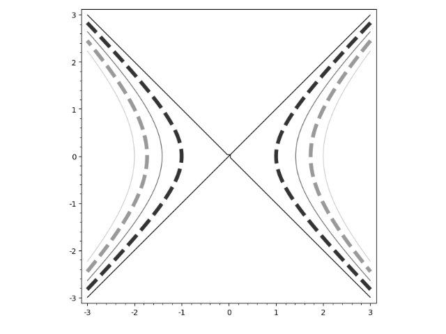sage: P = contour_plot(x^2 - y^2, (x,-3,3), (y,-3,3), ....: contours=[0,1,2,3,4], linewidths=[1,5], ....: linestyles=['solid','dashed']) sage: P Graphics object consisting of 1 graphics primitive
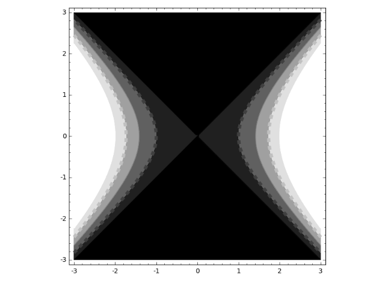sage: P = contour_plot(x^2 - y^2, (x,-3,3), (y,-3,3), ....: contours=[0,1,2,3,4], linewidths=[1,5], ....: linestyles=['-',':']) sage: P Graphics object consisting of 1 graphics primitive
We can add labels and play with them:
sage: contour_plot(y^2 + 1 - x^3 - x, (x,-pi,pi), (y,-pi,pi), ....: fill=False, cmap='hsv', labels=True) Graphics object consisting of 1 graphics primitive
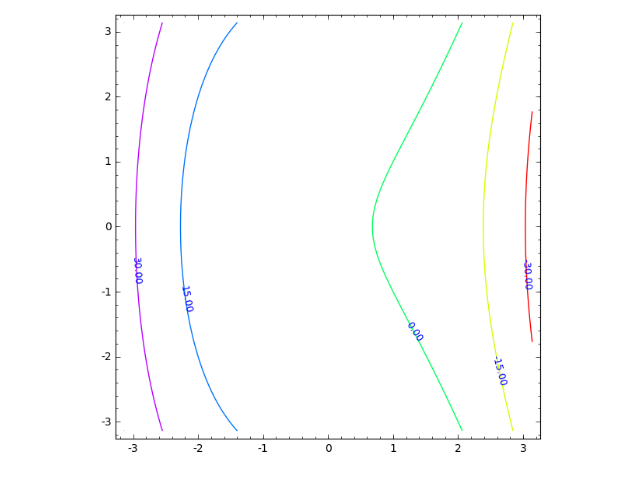sage: P=contour_plot(y^2 + 1 - x^3 - x, (x,-pi,pi), (y,-pi,pi), ....: fill=False, cmap='hsv', ....: labels=True, label_fmt="%1.0f", ....: label_colors='black') sage: P Graphics object consisting of 1 graphics primitive
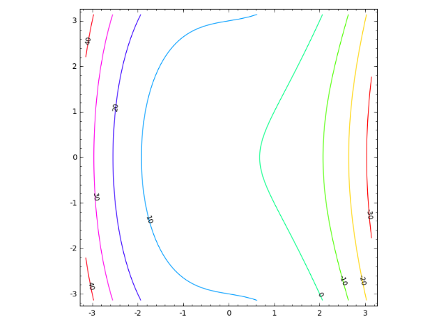sage: P = contour_plot(y^2 + 1 - x^3 - x, (x,-pi,pi), (y,-pi,pi), ....: fill=False, cmap='hsv', labels=True, ....: contours=[-4,0,4], ....: label_fmt={-4:"low", 0:"medium", 4: "hi"}, ....: label_colors='black') sage: P Graphics object consisting of 1 graphics primitive

sage: P = contour_plot(y^2 + 1 - x^3 - x, (x,-pi,pi), (y,-pi,pi), ....: fill=False, cmap='hsv', labels=True, ....: contours=[-4,0,4], label_fmt=lambda x: "$z=%s$"%x, ....: label_colors='black', label_inline=True, ....: label_fontsize=12) sage: P Graphics object consisting of 1 graphics primitive

sage: P = contour_plot(y^2 + 1 - x^3 - x, (x,-pi,pi), (y,-pi,pi), ....: fill=False, cmap='hsv', labels=True, ....: label_fontsize=18) sage: P Graphics object consisting of 1 graphics primitive
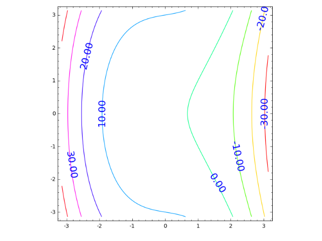sage: P = contour_plot(y^2 + 1 - x^3 - x, (x,-pi,pi), (y,-pi,pi), ....: fill=False, cmap='hsv', labels=True, ....: label_inline_spacing=1) sage: P Graphics object consisting of 1 graphics primitive
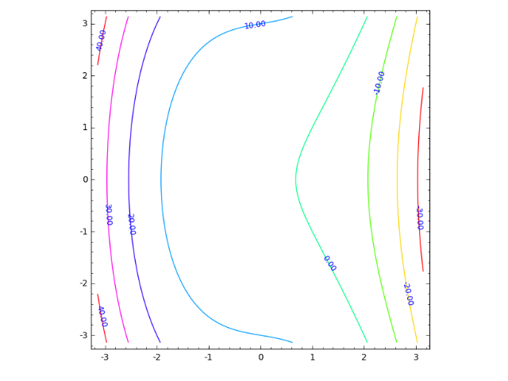sage: P = contour_plot(y^2 + 1 - x^3 - x, (x,-pi,pi), (y,-pi,pi), ....: fill=False, cmap='hsv', labels=True, ....: label_inline=False) sage: P Graphics object consisting of 1 graphics primitive

We can change the color of the labels if so desired:
sage: contour_plot(f, (-2,2), (-2,2), labels=True, label_colors='red') Graphics object consisting of 1 graphics primitive
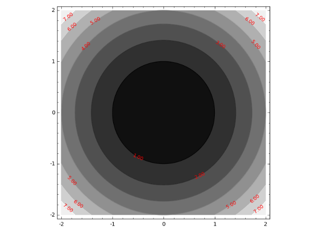We can add a colorbar as well:
sage: f(x, y)=x^2-y^2 sage: contour_plot(f, (x,-3,3), (y,-3,3), colorbar=True) Graphics object consisting of 1 graphics primitive
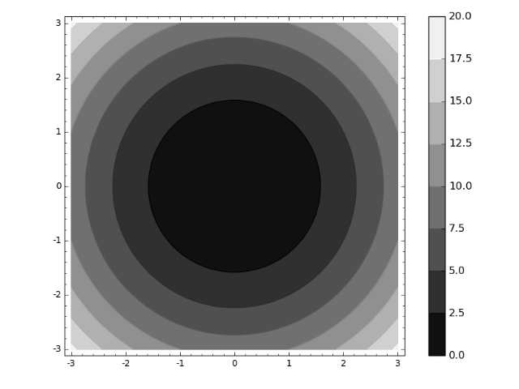sage: contour_plot(f, (x,-3,3), (y,-3,3), colorbar=True, colorbar_orientation='horizontal') Graphics object consisting of 1 graphics primitive
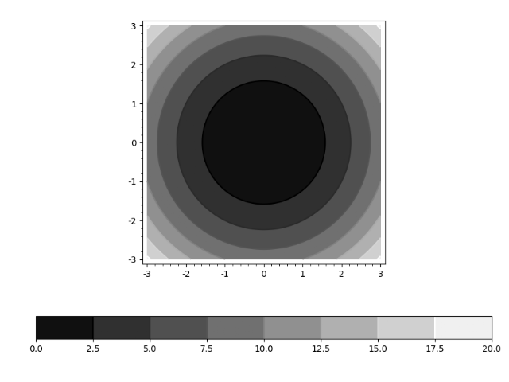sage: contour_plot(f, (x,-3,3), (y,-3,3), contours=[-2,-1,4], colorbar=True) Graphics object consisting of 1 graphics primitive
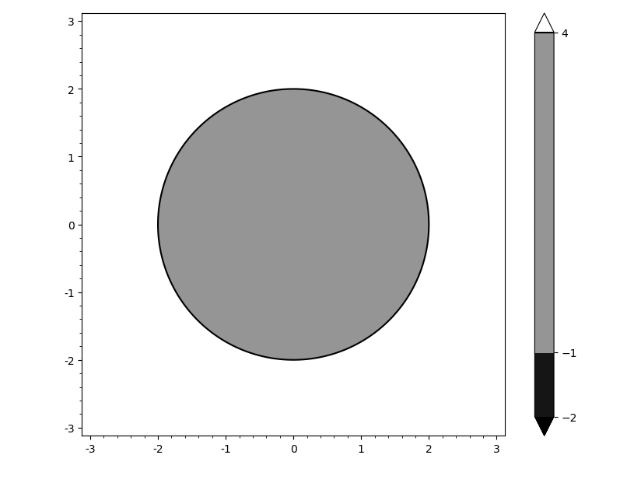sage: contour_plot(f, (x,-3,3), (y,-3,3), contours=[-2,-1,4], ....: colorbar=True, colorbar_spacing='uniform') Graphics object consisting of 1 graphics primitive
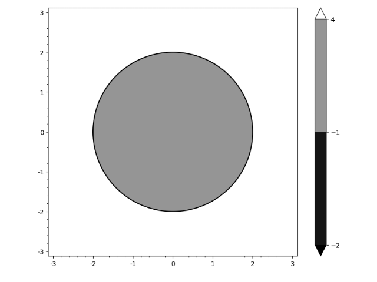sage: contour_plot(f, (x,-3,3), (y,-3,3), contours=[0,2,3,6], ....: colorbar=True, colorbar_format='%.3f') Graphics object consisting of 1 graphics primitive
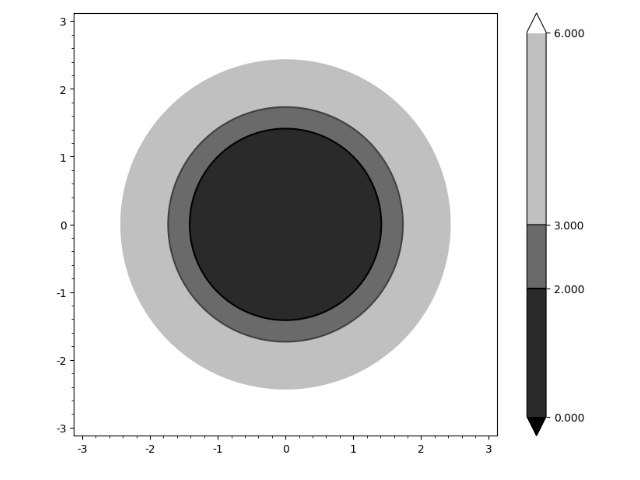sage: contour_plot(f, (x,-3,3), (y,-3,3), labels=True, ....: label_colors='red', contours=[0,2,3,6], ....: colorbar=True) Graphics object consisting of 1 graphics primitive
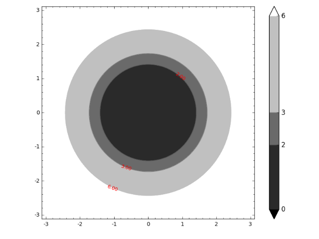sage: contour_plot(f, (x,-3,3), (y,-3,3), cmap='winter', ....: contours=20, fill=False, colorbar=True) Graphics object consisting of 1 graphics primitive
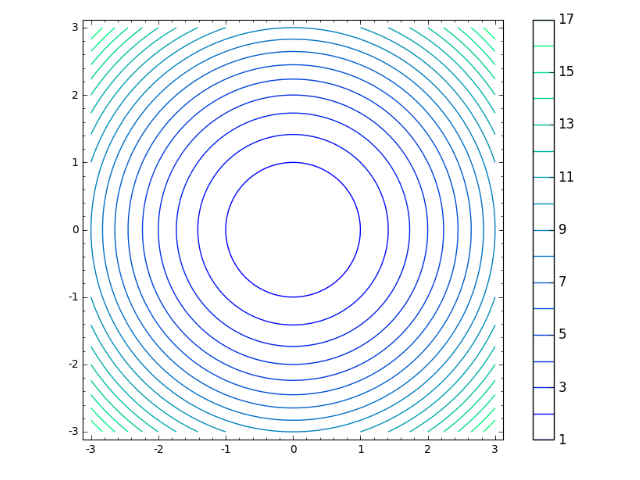This should plot concentric circles centered at the origin:
sage: x,y = var('x,y') sage: contour_plot(x^2 + y^2-2,(x,-1,1), (y,-1,1)) Graphics object consisting of 1 graphics primitive
Extra options will get passed on to show(), as long as they are valid:
sage: f(x,y) = cos(x) + sin(y) sage: contour_plot(f, (0,pi), (0,pi), axes=True) Graphics object consisting of 1 graphics primitive
sage: contour_plot(f, (0,pi), (0,pi)).show(axes=True) # These are equivalent
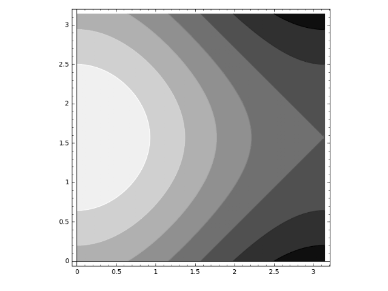One can also plot over a reduced region:
sage: contour_plot(x**2 - y**2, (x,-2,2), (y,-2,2), region=x - y, plot_points=300) Graphics object consisting of 1 graphics primitive
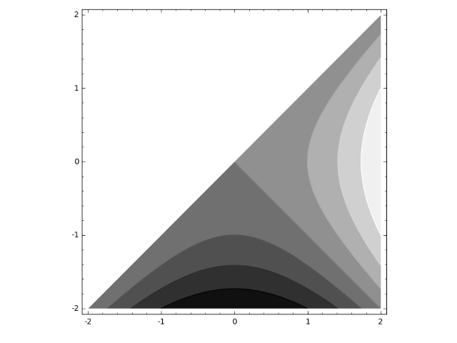Note that with
fill=Falseand grayscale contours, there is the possibility of confusion between the contours and the axes, so usefill=Falsetogether withaxes=Truewith caution:sage: contour_plot(f, (-pi,pi), (-pi,pi), fill=False, axes=True) Graphics object consisting of 1 graphics primitive
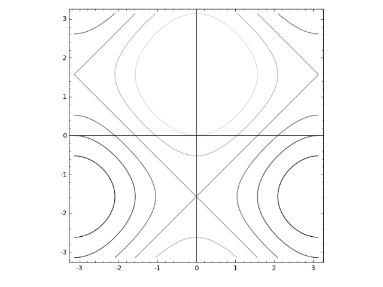
-
sage.plot.contour_plot.equify(f)¶ Returns the equation rewritten as a symbolic function to give negative values when True, positive when False.
EXAMPLES:
sage: from sage.plot.contour_plot import equify sage: var('x, y') (x, y) sage: equify(x^2 < 2) x^2 - 2 sage: equify(x^2 > 2) -x^2 + 2 sage: equify(x*y > 1) -x*y + 1 sage: equify(y > 0) -y sage: f=equify(lambda x, y: x > y) sage: f(1, 2) 1 sage: f(2, 1) -1
-
sage.plot.contour_plot.implicit_plot(f, xrange, yrange, cmap=['blue'], contours=(0,), plot_points=150, fill=False, **options)¶ implicit_plottakes a function of two variables, \(f(x, y)\) and plots the curve \(f(x,y) = 0\) over the specifiedxrangeandyrangeas demonstrated below.implicit_plot(f, (xmin,xmax), (ymin,ymax), ...)implicit_plot(f, (x,xmin,xmax), (y,ymin,ymax), ...)INPUT:
f– a function of two variables or equation in two variables(xmin,xmax)– 2-tuple, the range ofxvalues or(x,xmin,xmax)(ymin,ymax)– 2-tuple, the range ofyvalues or(y,ymin,ymax)
The following inputs must all be passed in as named parameters:
plot_points– integer (default: 150); number of points to plot in each direction of the gridfill– boolean (default:False); ifTrue, fill the region \(f(x, y) < 0\).fillcolor– string (default:'blue'), the color of the region where \(f(x,y) < 0\) iffill = True. Colors are defined insage.plot.colors; trycolors?to see them all.linewidth– integer (default: None), if a single integer all levels will be of the width given, otherwise the levels will be plotted with the widths in the order given.linestyle– string (default: None), the style of the line to be plotted, one of:"solid","dashed","dashdot"or"dotted", respectively"-","--","-.", or":".color– string (default:'blue'), the color of the plot. Colors are defined insage.plot.colors; trycolors?to see them all. Iffill = True, then this sets only the color of the border of the plot. Seefillcolorfor setting the color of the fill region.legend_label– the label for this item in the legendbase– (default: 10) the base of the logarithm if a logarithmic scale is set. This must be greater than 1. The base can be also given as a list or tuple(basex, basey).basexsets the base of the logarithm along the horizontal axis andbaseysets the base along the vertical axis.scale– (default:"linear") string. The scale of the axes. Possible values are"linear","loglog","semilogx","semilogy".The scale can be also be given as single argument that is a list or tuple
(scale, base)or(scale, basex, basey).The
"loglog"scale sets both the horizontal and vertical axes to logarithmic scale. The"semilogx"scale sets the horizontal axis to logarithmic scale. The"semilogy"scale sets the vertical axis to logarithmic scale. The"linear"scale is the default value whenGraphicsis initialized.
EXAMPLES:
A simple circle with a radius of 2. Note that since the input function is an expression, we need to explicitly declare the variables in 3-tuples for the range:
sage: var("x y") (x, y) sage: implicit_plot(x^2 + y^2 - 2, (x,-3,3), (y,-3,3)) Graphics object consisting of 1 graphics primitive
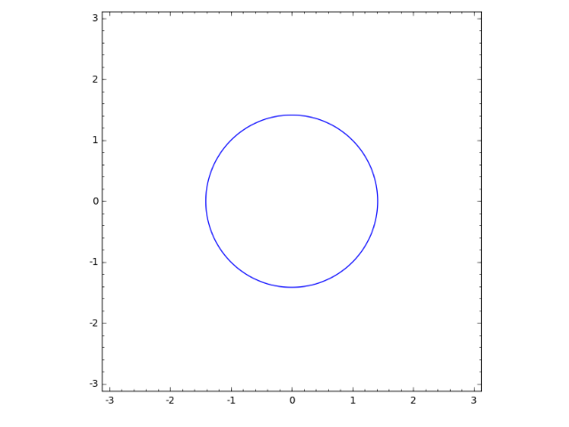We can do the same thing, but using a callable function so we don’t need to explicitly define the variables in the ranges. We also fill the inside:
sage: f(x,y) = x^2 + y^2 - 2 sage: implicit_plot(f, (-3,3), (-3,3), fill=True, plot_points=500) # long time Graphics object consisting of 2 graphics primitives
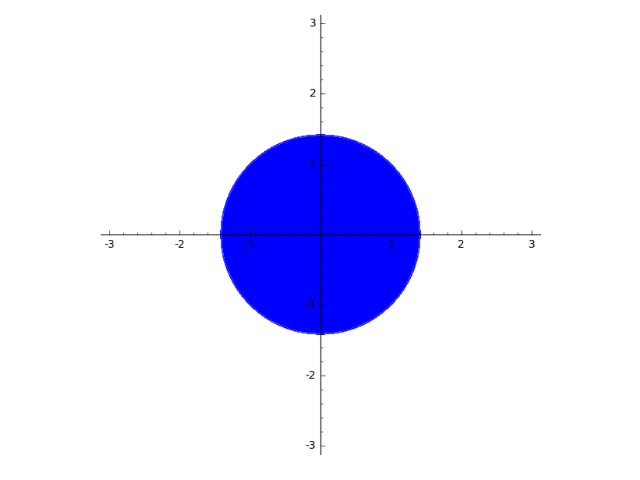The same circle but with a different line width:
sage: implicit_plot(f, (-3,3), (-3,3), linewidth=6) Graphics object consisting of 1 graphics primitive

Again the same circle but this time with a dashdot border:
sage: implicit_plot(f, (-3,3), (-3,3), linestyle='dashdot') Graphics object consisting of 1 graphics primitive
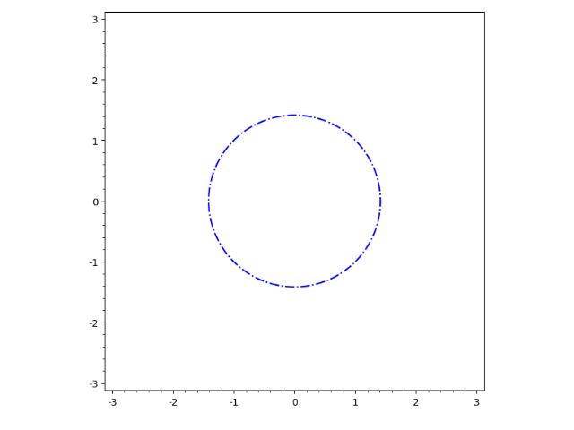The same circle with different line and fill colors:
sage: implicit_plot(f, (-3,3), (-3,3), color='red', fill=True, fillcolor='green', ....: plot_points=500) # long time Graphics object consisting of 2 graphics primitives

You can also plot an equation:
sage: var("x y") (x, y) sage: implicit_plot(x^2 + y^2 == 2, (x,-3,3), (y,-3,3)) Graphics object consisting of 1 graphics primitive

You can even change the color of the plot:
sage: implicit_plot(x^2 + y^2 == 2, (x,-3,3), (y,-3,3), color="red") Graphics object consisting of 1 graphics primitive
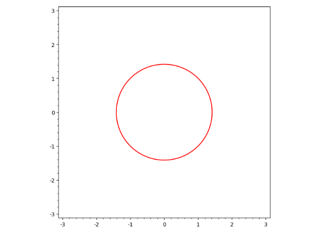The color of the fill region can be changed:
sage: implicit_plot(x**2 + y**2 == 2, (x,-3,3), (y,-3,3), fill=True, fillcolor='red') Graphics object consisting of 2 graphics primitives
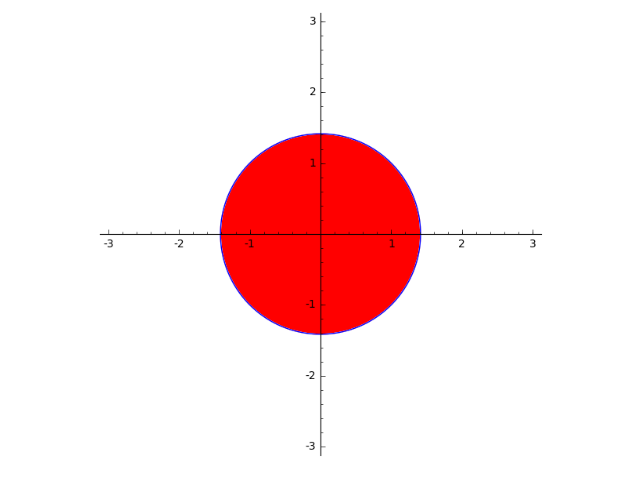Here is a beautiful (and long) example which also tests that all colors work with this:
sage: G = Graphics() sage: counter = 0 sage: for col in colors.keys(): # long time ....: G += implicit_plot(x^2 + y^2 == 1 + counter*.1, (x,-4,4),(y,-4,4), color=col) ....: counter += 1 sage: G # long time Graphics object consisting of 148 graphics primitives
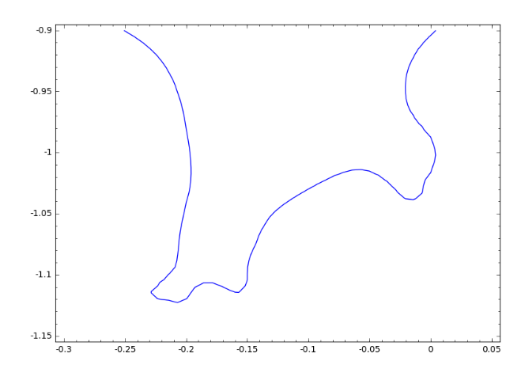We can define a level-\(n\) approximation of the boundary of the Mandelbrot set:
sage: def mandel(n): ....: c = polygen(CDF, 'c') ....: z = 0 ....: for i in range(n): ....: z = z*z + c ....: def f(x,y): ....: val = z(CDF(x, y)) ....: return val.norm() - 4 ....: return f
The first-level approximation is just a circle:
sage: implicit_plot(mandel(1), (-3,3), (-3,3)) Graphics object consisting of 1 graphics primitive
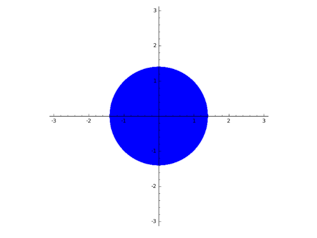A third-level approximation starts to get interesting:
sage: implicit_plot(mandel(3), (-2,1), (-1.5,1.5)) Graphics object consisting of 1 graphics primitive
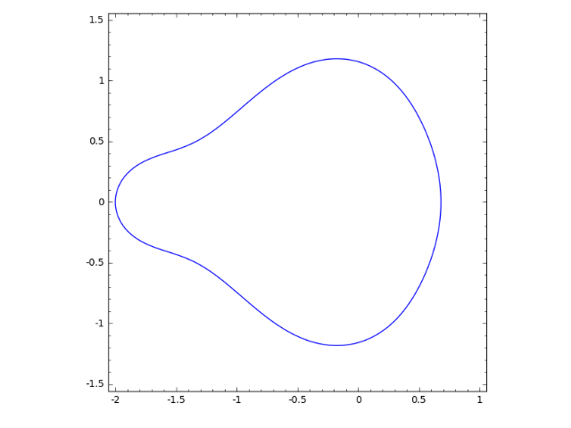The seventh-level approximation is a degree 64 polynomial, and
implicit_plotdoes a pretty good job on this part of the curve. (plot_points=200looks even better, but it takes over a second.)sage: implicit_plot(mandel(7), (-0.3, 0.05), (-1.15, -0.9), plot_points=50) Graphics object consisting of 1 graphics primitive
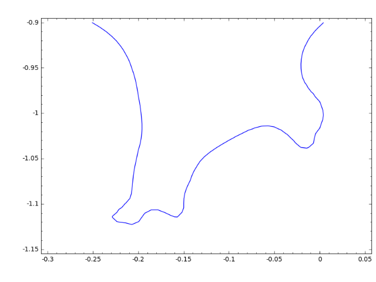When making a filled implicit plot using a python function rather than a symbolic expression the user should increase the number of plot points to avoid artifacts:
sage: implicit_plot(lambda x, y: x^2 + y^2 - 2, (x,-3,3), (y,-3,3), ....: fill=True, plot_points=500) # long time Graphics object consisting of 2 graphics primitives
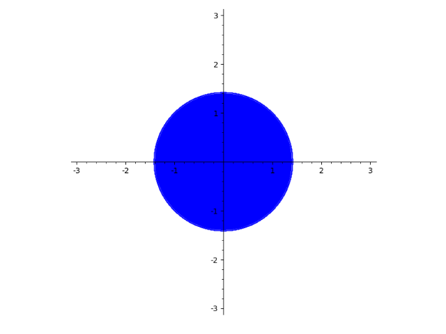An example of an implicit plot on ‘loglog’ scale:
sage: implicit_plot(x^2 + y^2 == 200, (x,1,200), (y,1,200), scale='loglog') Graphics object consisting of 1 graphics primitive
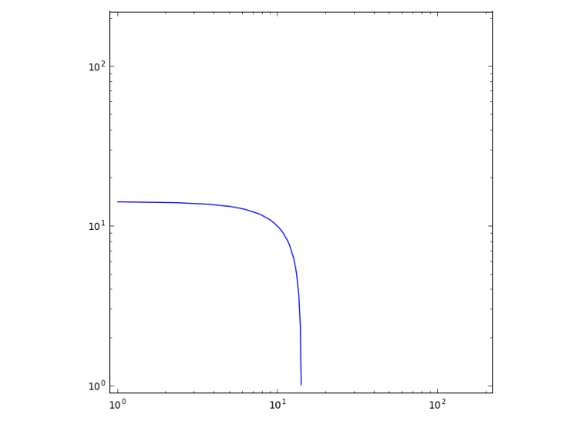
-
sage.plot.contour_plot.region_plot(f, xrange, yrange, plot_points, incol, outcol, bordercol, borderstyle, borderwidth, alpha, frame=False, axes=True, plot_points=100, aspect_ratio=1, outcol=None, borderwidth=None, incol='blue', alpha=1, borderstyle=None, legend_label=None, bordercol=None, **options)¶ region_plottakes a boolean function of two variables, \(f(x, y)\) and plots the region where f is True over the specifiedxrangeandyrangeas demonstrated below.region_plot(f, (xmin,xmax), (ymin,ymax), ...)INPUT:
f– a boolean function or a list of boolean functions of two variables(xmin,xmax)– 2-tuple, the range ofxvalues OR 3-tuple(x,xmin,xmax)(ymin,ymax)– 2-tuple, the range ofyvalues OR 3-tuple(y,ymin,ymax)plot_points– integer (default: 100); number of points to plot in each direction of the gridincol– a color (default:'blue'), the color inside the regionoutcol– a color (default:None), the color of the outside of the region
If any of these options are specified, the border will be shown as indicated, otherwise it is only implicit (with color
incol) as the border of the inside of the region.bordercol– a color (default:None), the color of the border(
'black'ifborderwidthorborderstyleis specified but notbordercol)
borderstyle– string (default:'solid'), one of'solid','dashed','dotted','dashdot', respectively'-','--',':','-.'.borderwidth– integer (default:None), the width of the border in pixelsalpha– (default: 1) how transparent the fill is; a number between 0 and 1legend_label– the label for this item in the legendbase- (default: 10) the base of the logarithm if a logarithmic scale is set. This must be greater than 1. The base can be also given as a list or tuple(basex, basey).basexsets the base of the logarithm along the horizontal axis andbaseysets the base along the vertical axis.scale– (default:"linear") string. The scale of the axes. Possible values are"linear","loglog","semilogx","semilogy".The scale can be also be given as single argument that is a list or tuple
(scale, base)or(scale, basex, basey).The
"loglog"scale sets both the horizontal and vertical axes to logarithmic scale. The"semilogx"scale sets the horizontal axis to logarithmic scale. The"semilogy"scale sets the vertical axis to logarithmic scale. The"linear"scale is the default value whenGraphicsis initialized.
EXAMPLES:
Here we plot a simple function of two variables:
sage: x,y = var('x,y') sage: region_plot(cos(x^2 + y^2) <= 0, (x,-3,3), (y,-3,3)) Graphics object consisting of 1 graphics primitive
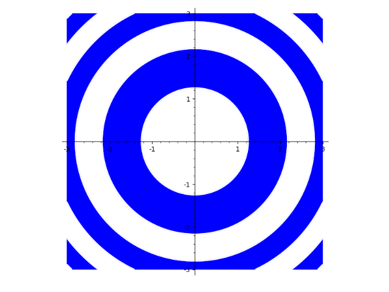Here we play with the colors:
sage: region_plot(x^2 + y^3 < 2, (x,-2,2), (y,-2,2), incol='lightblue', bordercol='gray') Graphics object consisting of 2 graphics primitives
An even more complicated plot, with dashed borders:
sage: region_plot(sin(x) * sin(y) >= 1/4, (x,-10,10), (y,-10,10), ....: incol='yellow', bordercol='black', ....: borderstyle='dashed', plot_points=250) Graphics object consisting of 2 graphics primitives
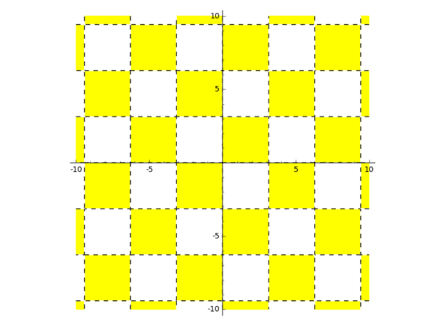A disk centered at the origin:
sage: region_plot(x^2 + y^2 < 1, (x,-1,1), (y,-1,1)) Graphics object consisting of 1 graphics primitive
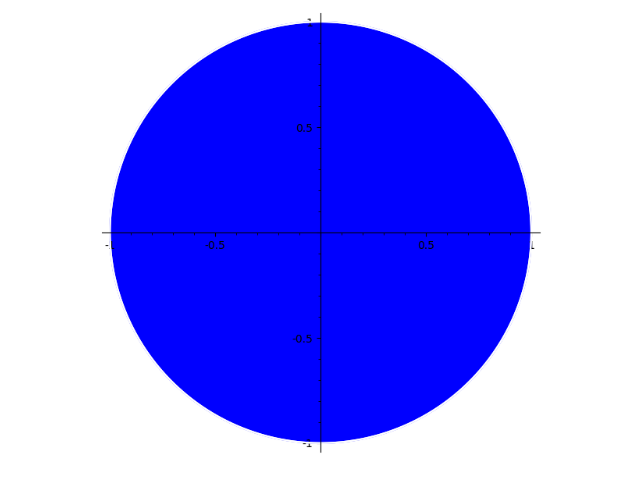A plot with more than one condition (all conditions must be true for the statement to be true):
sage: region_plot([x^2 + y^2 < 1, x < y], (x,-2,2), (y,-2,2)) Graphics object consisting of 1 graphics primitive
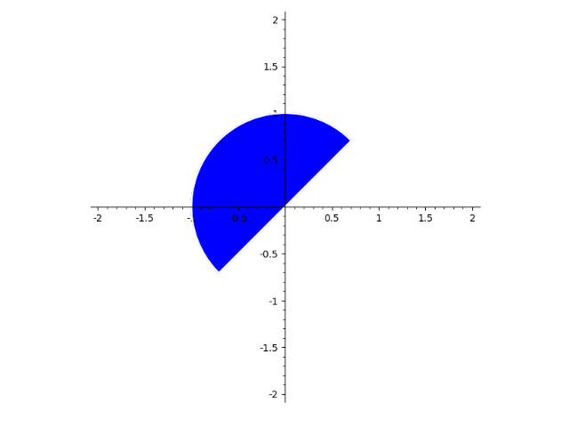Since it doesn’t look very good, let’s increase
plot_points:sage: region_plot([x^2 + y^2 < 1, x< y], (x,-2,2), (y,-2,2), plot_points=400) Graphics object consisting of 1 graphics primitive
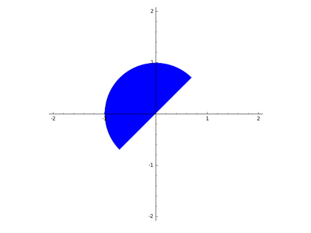To get plots where only one condition needs to be true, use a function. Using lambda functions, we definitely need the extra
plot_points:sage: region_plot(lambda x, y: x^2 + y^2 < 1 or x < y, (x,-2,2), (y,-2,2), plot_points=400) Graphics object consisting of 1 graphics primitive
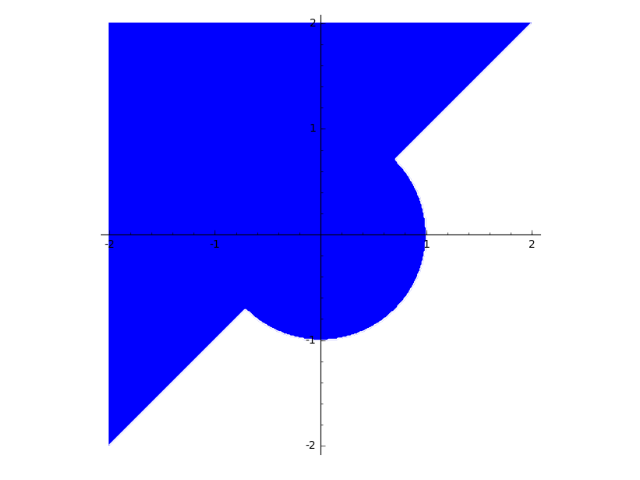The first quadrant of the unit circle:
sage: region_plot([y > 0, x > 0, x^2 + y^2 < 1], (x,-1.1,1.1), (y,-1.1,1.1), plot_points=400) Graphics object consisting of 1 graphics primitive
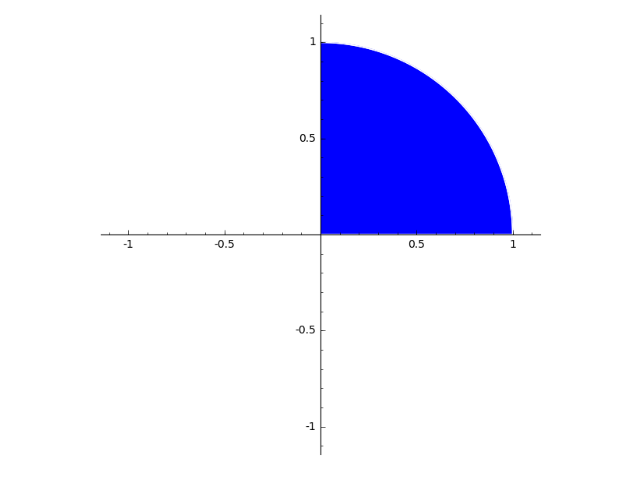Here is another plot, with a huge border:
sage: region_plot(x*(x-1)*(x+1) + y^2 < 0, (x,-3,2), (y,-3,3), ....: incol='lightblue', bordercol='gray', borderwidth=10, ....: plot_points=50) Graphics object consisting of 2 graphics primitives
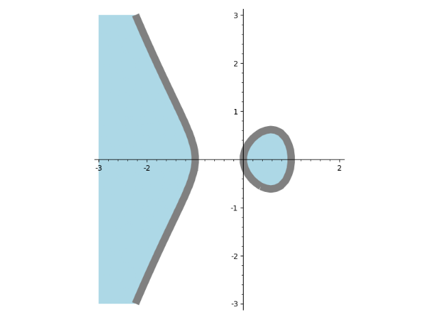If we want to keep only the region where x is positive:
sage: region_plot([x*(x-1)*(x+1) + y^2 < 0, x > -1], (x,-3,2), (y,-3,3), ....: incol='lightblue', plot_points=50) Graphics object consisting of 1 graphics primitive
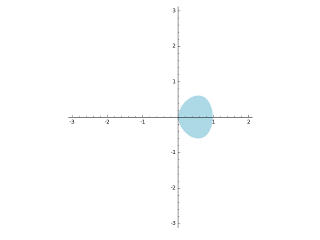Here we have a cut circle:
sage: region_plot([x^2 + y^2 < 4, x > -1], (x,-2,2), (y,-2,2), ....: incol='lightblue', bordercol='gray', plot_points=200) Graphics object consisting of 2 graphics primitives
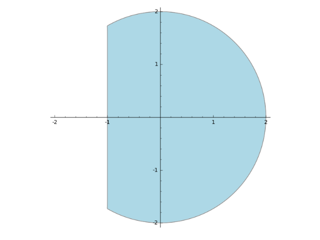The first variable range corresponds to the horizontal axis and the second variable range corresponds to the vertical axis:
sage: s, t = var('s, t') sage: region_plot(s > 0, (t,-2,2), (s,-2,2)) Graphics object consisting of 1 graphics primitive
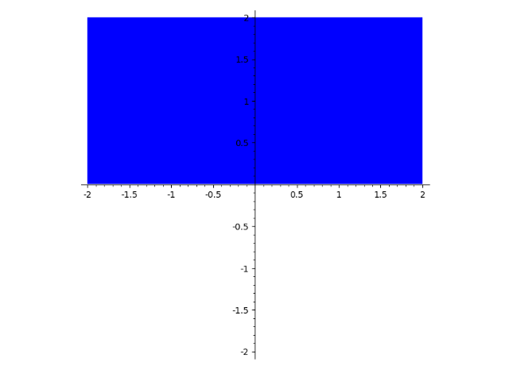sage: region_plot(s>0,(s,-2,2),(t,-2,2)) Graphics object consisting of 1 graphics primitive
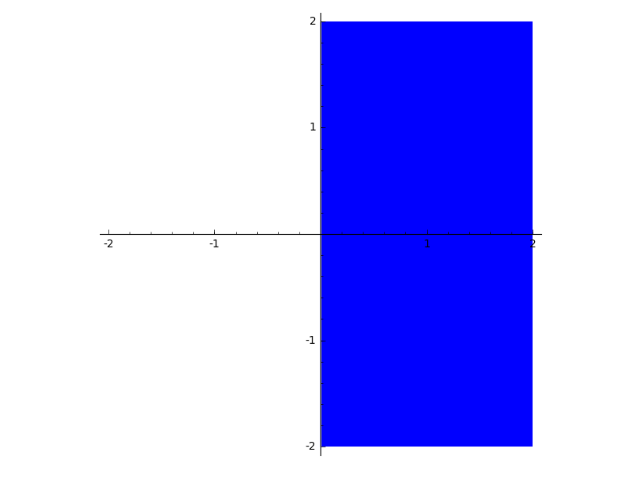An example of a region plot in ‘loglog’ scale:
sage: region_plot(x^2 + y^2 < 100, (x,1,10), (y,1,10), scale='loglog') Graphics object consisting of 1 graphics primitive